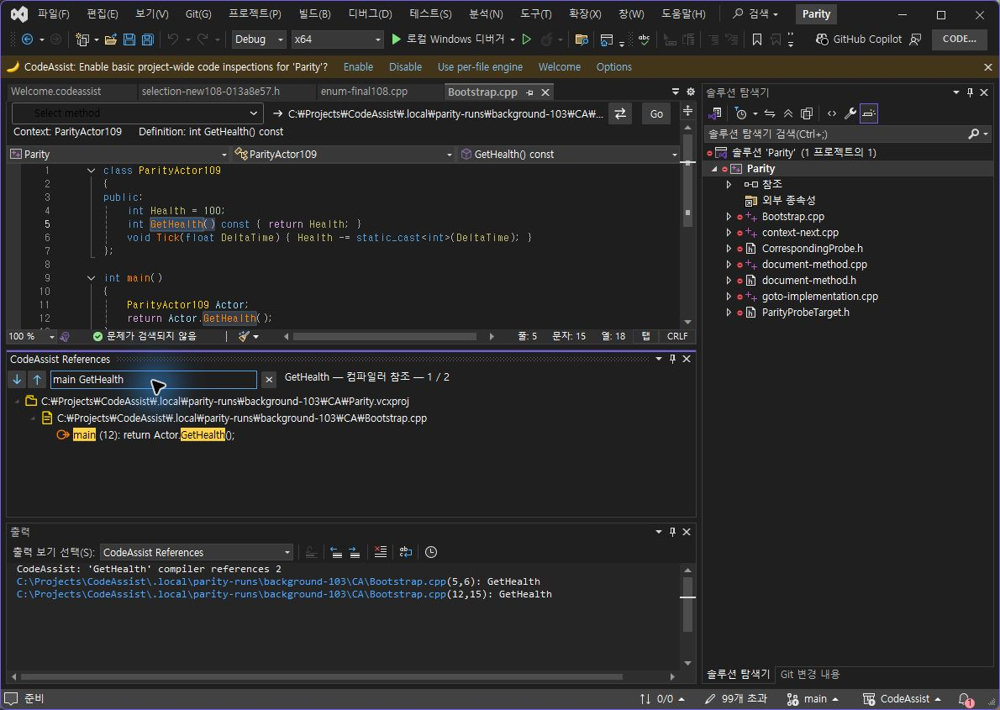
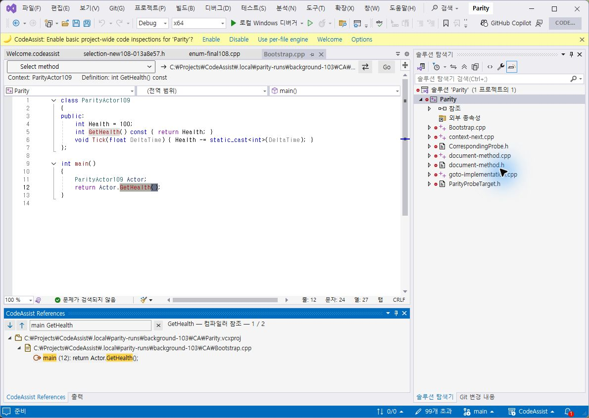
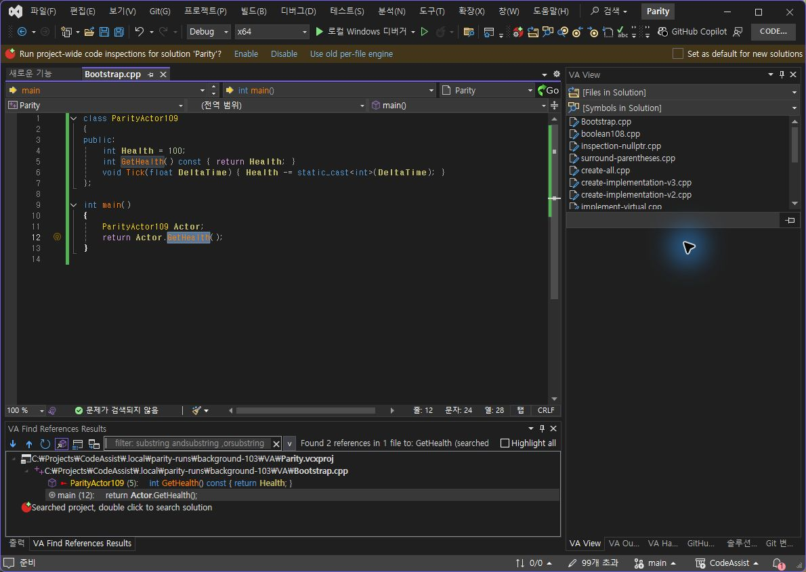

Tracefolio REPORTS & ISSUES
Tracefolio REPORTS & ISSUESCA 0.0.113 — 참조 문맥·검색어 강조·하단 탭 그룹
기존 기록 이전원문에 기록된 작업 내용과 당시 검증 범위를 정리한 보관 기록입니다.
참조 문맥·강조·탭 배치 0.0.113
CA 0.0.113 — 참조 문맥·검색어 강조·하단 탭 그룹
이번 수정
전역 함수 main 및 클래스 문맥을 결과 행과 필터에 포함했습니다. 문맥 계산을 참조 행마다 수행하던 방식에서 파일당 한 번으로 변경했습니다. 검색어는 결과 본문에서 노란 배경으로 강조합니다. 직접 그린 벡터 아이콘을 유지하며 실제 검사 프로필에서 참조 창을 출력 창과 같은 하단 탭 그룹으로 옮겼습니다.
같은 입력·안정 상태 대조
동일하게 저장된 Bootstrap.cpp의 GetHealth를 검색한 뒤 main GetHealth 필터 입력. 입력 직후 VA는 이전 두 행을 잠시 유지했으므로 해당 화면(관찰667)은 통과 근거에서 제외했습니다. 후속 관찰668에서 호출 12행 한 개로 반영된 것을 확인했습니다. CA도 후속 관찰679로 결과를 확인했습니다.
| 검사 | VA | CA 0.0.113 |
|---|---|---|
| main GetHealth 필터 표시 | 12행 한 개 | 12행 한 개 |
| 필터 결과 더블클릭 | 12:15→12:24 GetHealth | 12:15→12:24 GetHealth |
VA 안정된 필터 결과

CA 함수 문맥·검색어 강조

실제 라이트 테마 대조
VA 라이트

CA 라이트

다크 복구·하단 배치
현재 두 1190×845 창에서 참조 영역 외곽은 약 x7,y625,w822,h189이며 허용 오차 4px로 위치·크기를 확인했습니다. 출력과 같은 탭 그룹 여부도 촬영으로 확인했습니다. 검사 프로필에서 수동 적용한 배치이며 새 프로필 기본 배치나 재시작 후 유지까지 인증한 결과는 아닙니다.
VA 원래 다크 복구, 필터 지움

CA 원래 다크 복구, 필터 지움

남은 차이
VA 전체 도구 모음·숨겨진 참조·검색 범위 제어는 아직 동일하지 않습니다.
검색어 색조·선택 행·구문 색상·아이콘 세부 모양도 차이가 있습니다.
문맥은 C++ 어휘 분석 보조 기능입니다. 복잡한 문법·다른 언어의 완전한 문맥 판정으로 인증하지 않습니다.
다른 창과 전체 기능·버전·단축키 검증은 계속 필요합니다.
빌드·설치 및 원본 보존
Core 테스트 317/317(100%), VS2019·Modern 빌드 성공. 검사 프로필 설치 바이너리 6/6 해시 일치. 양쪽 시험 파일 원본 SHA256 8A9D8AD69A16FB6813230BE6B2DB5A5717D5DEB55B426B092465777AF2884188 유지.
계산·판정 · 테스트 · 설치 해시 · VA 실행 범위 · CA 실행 범위
XERJ: 사용 — 문맥·범위 탐색 구현 후보를 검색하고 현재 소스로 확인했습니다. 전체 목표는 진행 중입니다.
원문과 편집 이력
- 원문 SHA-256:
58eaf20d80914e25afa97d47062698d76f4223b785571763ba05bec9b9c97696 - 표시 날짜는 원본 파일의 수정 시각입니다. 작업 완료 시각은 원문에 있는 값을 기준으로 확인합니다.